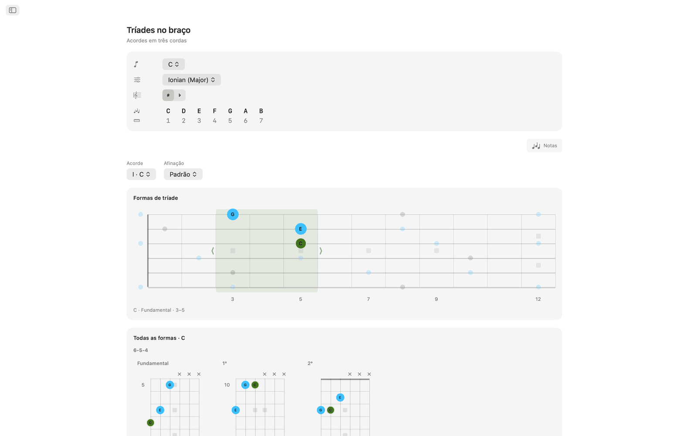
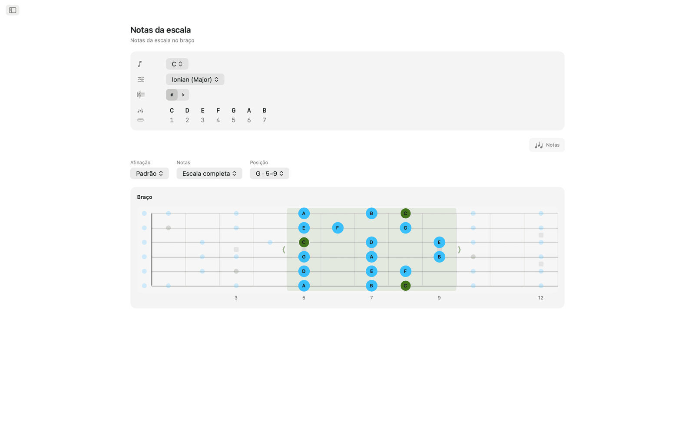
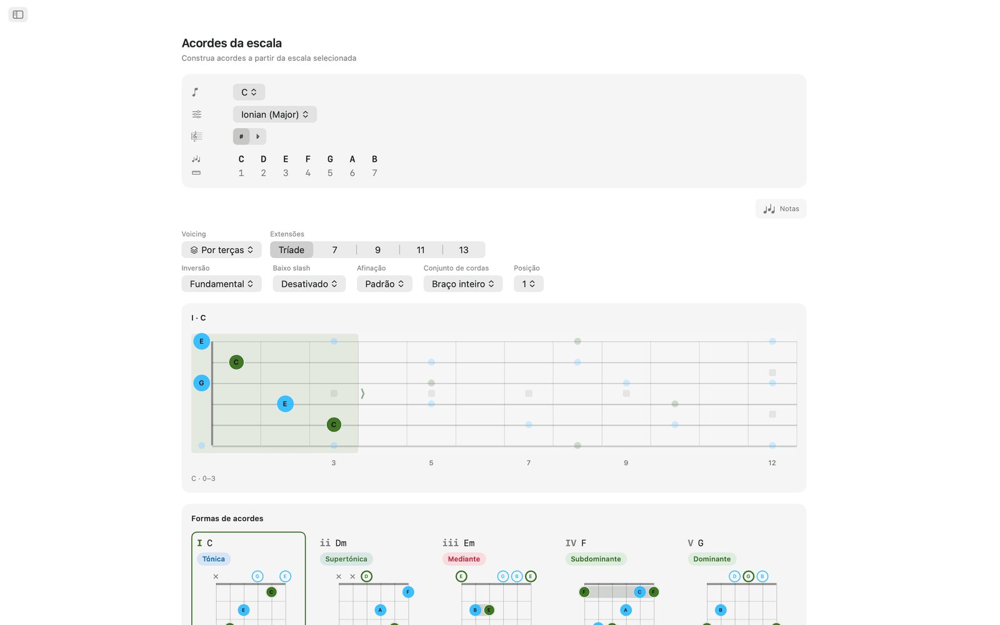
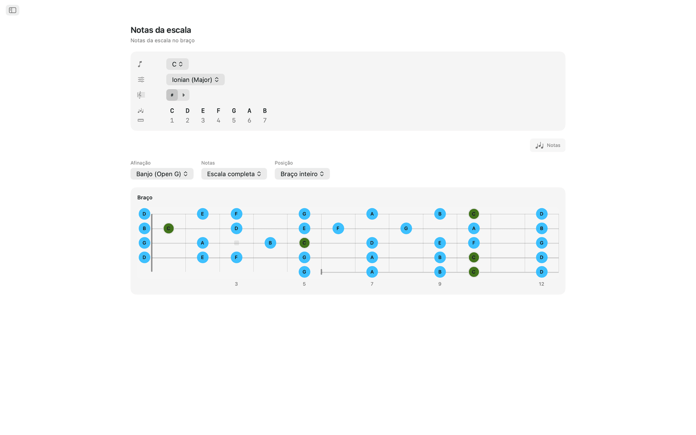
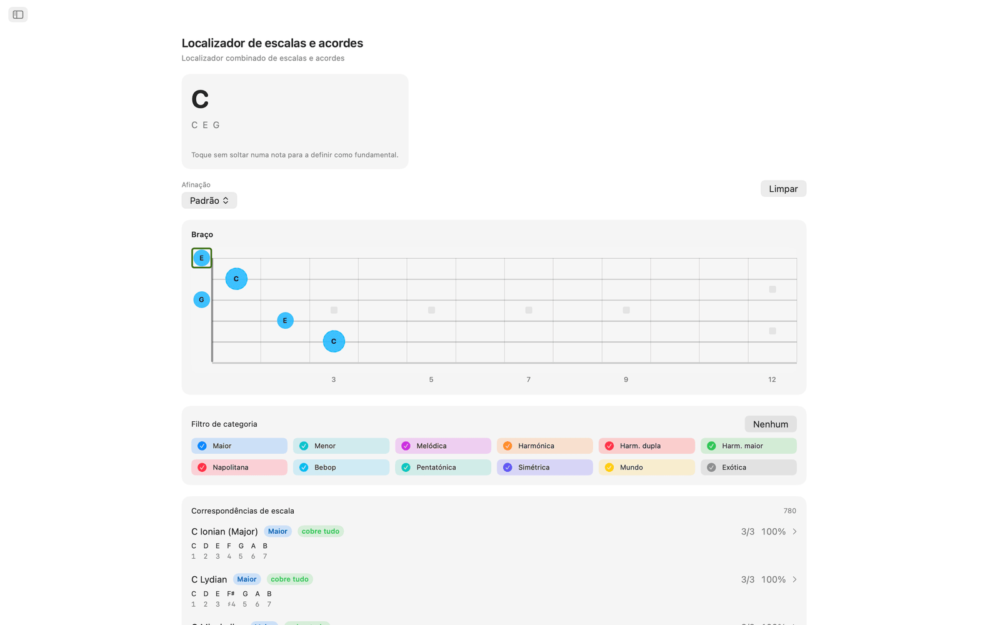
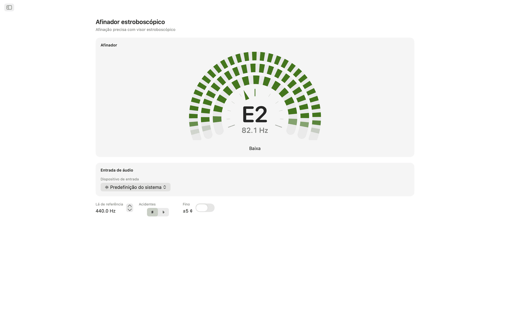
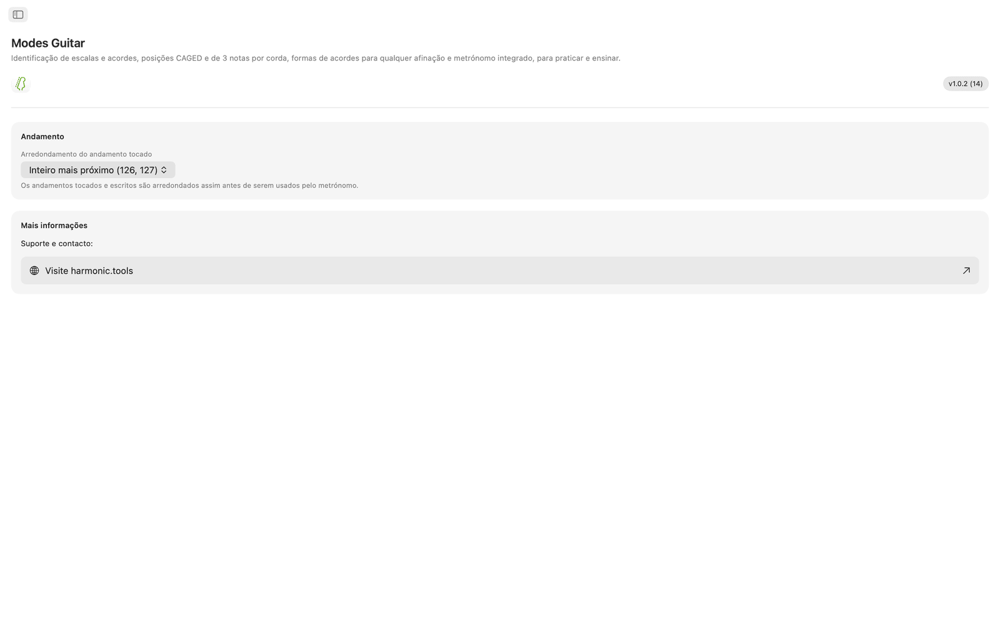

Modes Guitar para macOS
O Modes Guitar é uma aplicação de braço de guitarra para o Mac. Toque nas notas que está a dedilhar para descobrir o que está a tocar, distribua qualquer escala em posições CAGED ou de três notas por corda, consulte formas de acordes tocáveis em qualquer afinação e pratique com um metrónomo integrado. É uma aplicação com navegação lateral, por isso pode ficar ao lado da DAW ou do plano de aula.
- Localizador de escalas e acordes diretamente no braço
- Posições CAGED e três notas por corda
- Formas de acordes tocáveis em qualquer afinação
- 20 afinações, mais a sua afinação personalizada
- Afinador estroboscópico com seleção de interface de áudio e canal
- Metrónomo de estudo e widgets no Centro de Notificações
Capturas de ecrã
Inclui capturas de ecrã em modo claro e escuro que acompanham o tema do website.









Funcionalidades
- Toque nas notas que está a segurar no braço e o Modes Guitar nomeia o acorde em tempo real (maior, menor, diminuto, aumentado, com extensões, suspenso e mais) e classifica cada escala compatível por cobertura de notas. Filtre por família de escalas para reduzir a lista e salte para os acordes dessa escala.
- Escolha uma fundamental e uma escala e cada nota da escala acende-se ao longo do braço. Mude para posições CAGED ou passagens de três notas por corda, arraste uma caixa ao longo do braço para mudar de posição e reduza as notas a tríade, sétima, pentatónica ou à escala completa.
- Cada grau da escala tem dedilhados de acordes tocáveis, com marcadores de cordas soltas e abafadas, indicadores de pestana e uma régua com números de traste quando a forma se situa mais acima no braço. Percorra as posições ao longo do braço, escolha uma inversão ou force qualquer nota da escala para o baixo, para os acordes com baixo invertido.
- Qualquer acorde da tonalidade pode ser desmontado e voltar a ser colocado no braço. Cada voicing fechado é apresentado numa grelha de diagramas, agrupados por conjunto de cordas, em estado fundamental, primeira inversão e segunda inversão. Escolha um e ele aparece no braço, com as restantes notas do acorde à volta, e pode arrastar a forma ao longo do braço para tocar o mesmo dedilhado em todas as posições.
- Há 20 afinações: Standard, Drop D, Drop C, E♭ Standard, DADGAD, Open G, Open D, sete cordas, barítono, baixo de quatro e cinco cordas, ukulele, banjo (cinco cordas, tenor e plectrum) e bandolim. As formas, os dedilhados e os nomes das notas são recalculados para a afinação escolhida, e ao reafinar o dedilhado mantém-se, para que possa ouvir aquilo em que a mesma forma se transforma. Para uma afinação personalizada, escolha de 3 a 8 cordas e afine cada uma de ouvido, a partir de qualquer predefinição.
- O afinador estroboscópico usa segmentos em movimento. Toque uma corda e três anéis de segmentos deslizam para um lado quando está abaixo e para o outro quando está acima, e ficam parados quando acerta na nota, o que mostra diferenças muito mais finas do que um ponteiro consegue. É totalmente cromático, por isso nomeia tudo o que tocar, corda solta ou nota premida, em qualquer afinação, e uma guitarra, um baixo, um ukulele, um banjo ou um bandolim afinam-se no mesmo mostrador. Pode ajustar o A de referência entre 415 e 466 Hz, ativar a escala Fine para ler até um décimo de cent e mostrar as alterações como sustenidos ou bemóis. No Mac escolhe ainda qual a interface de áudio e qual o canal de entrada que ele escuta, pelo que uma guitarra ligada a uma interface é afinada diretamente pelo cabo. Tudo é analisado no dispositivo e nada é gravado.
- O metrónomo de estudo tem compassos, subdivisões, swing, acentos por tempo, quatro vozes de clique, volume e vibração ajustáveis, além de tempos rápidos e predefinições guardadas para as passagens que está a treinar.
- Pode manter o metrónomo no Centro de Notificações e iniciá-lo ou pará-lo sem trocar de aplicação. Há também uma Escala do Dia e um Acorde do Dia para trabalhar.
No Mac
- Funciona totalmente no dispositivo: sem conta, sem anúncios, sem rastreamento
- Não requer ligação à internet
- Aparências clara e escura em toda a aplicação
- Uma aplicação com navegação lateral que funciona ao lado da sua DAW ou plano de aula
- Disponível em 22 idiomas
Acessibilidade
Funciona com o VoiceOver e o Controlo por Voz e pode ser utilizado pelo teclado, com as setas e a barra de espaços.
O Modes Guitar pode ser experimentado gratuitamente durante 7 dias. Depois do período de experiência, o acesso completo é uma compra única, sem subscrição.
Referência de braço e afinações
Referência das afinações, posições, ferramentas de acordes, funcionalidades do afinador e do metrónomo da aplicação.
Afinações
As formas, os dedilhados e os nomes das notas são recalculados para a afinação escolhida. Ao reafinar, o seu dedilhado mantém-se, para que possa ouvir aquilo em que a mesma forma se transforma. As notas são listadas da corda grave para a aguda.
| Afinação | Notas (grave → agudo) | Cordas |
|---|---|---|
| Standard | E A D G B E | 6 |
| Drop D | D A D G B E | 6 |
| Drop C | C G C F A D | 6 |
| E♭ Standard | E♭ A♭ D♭ G♭ B♭ E♭ | 6 |
| DADGAD | D A D G A D | 6 |
| Open G | D G D G B D | 6 |
| Open D | D A D F♯ A D | 6 |
| Seven-String | B E A D G B E | 7 |
| Baritone | B E A D F♯ B | 6 |
| Bass (4-String) | E A D G | 4 |
| Bass (5-String) | B E A D G | 5 |
| Ukulele | G C E A | 4 |
| Banjo (Open G) | G D G B D | 5 |
| Banjo (Double C) | G C G C D | 5 |
| Banjo (Sawmill) | G D G C D | 5 |
| Banjo (Open D) | F♯ D F♯ A D | 5 |
| Banjo (Tenor) | C G D A | 4 |
| Banjo (Irish Tenor) | G D A E | 4 |
| Banjo (Plectrum) | C G B D | 4 |
| Mandolin | G D A E | 4 |
Crie também a sua própria afinação: escolha de 3 a 8 cordas e afine cada uma de ouvido, a partir de qualquer predefinição.
Posições no braço
Distribua qualquer escala ao longo do braço e altere a quantidade que vê. Arraste uma caixa ao longo do braço para mudar de posição.
Sistemas de posição
Subconjuntos de notas
Formas de acordes
Cada grau da escala tem dedilhados tocáveis na afinação atual.
- Os dedilhados têm marcadores de cordas soltas e abafadas, indicadores de pestana e uma régua com números de traste quando a forma se situa mais acima no braço.
- Pode percorrer as formas ao longo do braço.
- As inversões permitem escolher qual a nota do acorde que fica no baixo.
- Para os acordes com baixo invertido, force qualquer nota da escala para o baixo.
Tríades no braço
Desmonte qualquer acorde da tonalidade e volte a colocá-lo no braço.
Afinador estroboscópico
Um afinador estroboscópico para qualquer instrumento em qualquer afinação. Analisado no dispositivo, nunca gravado.
Metrónomo de estudo
Um metrónomo completo para as passagens que está a treinar.
Widgets
Aceda ao metrónomo, à Escala do Dia e ao Acorde do Dia sem trocar de aplicação.